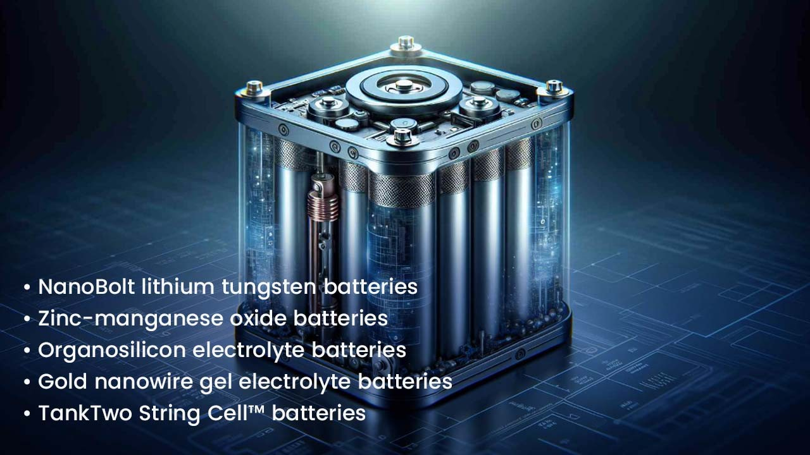

Forget gas guzzlers and sluggish charging times. The future of energy is buzzing with innovation, and batteries are leading the charge. Gone are the days of fire hazards and long waits – buckle up for a ride through five groundbreaking battery technologies that promise to electrify our world like never before.
From lightning-fast NanoBolt batteries that pack a punch to swappable power packs that transform your car into a pit-stop paradise, these advancements aren't just cool gadgets – they're the keys to unlocking a cleaner, faster, and more sustainable future. So, ditch the fossil fuels and get ready to plug into the revolution. The future is electric, and it's here to stay! Let’s discuss in detail:
1. NanoBolt lithium tungsten batteries
N1 Technologies, Inc. researchers incorporated tungsten and carbon multi-layered nanotubes into their battery anode materials. These nanotubes attach to the copper anode substrate and form a web-like nanostructure. More ions can connect to that vast surface during cycles of recharge and discharge. As a result, the NanoBolt lithium tungsten battery can be charged more quickly and holds more energy.
Ready to be trimmed to size, nanotubes can be included in any design for Lithium Batteries.
2. Zinc-manganese oxide batteries
In reality, how does a battery operate? A group at the DOE's Pacific Northwest National Laboratory conducted research into accepted theories and discovered an unanticipated chemical conversion reaction in a zinc-manganese oxide battery. Controlling that process could lead to an increase in energy density in traditional batteries without raising their price. Because of this, zinc-manganese oxide batteries could replace lead-acid and lithium-ion batteries in some situations, particularly when it comes to large-scale energy storage needed to maintain the country's electrical system.

3. Organosilicon electrolyte batteries
One issue with lithium batteries is the potential for the electrolyte to explode or catch fire. Organosilicon (OS) based liquid solvents were created by University of Wisconsin–Madison chemistry professors Robert Hamers and Robert West to find a safer alternative to the carbonate-based solvent system used in Li-ion batteries. The resultant electrolytes can be molecularly tailored for the consumer, military, and industrial Li-ion battery sectors.
4. Gold nanowire gel electrolyte batteries
Gels are less flammable than liquids, therefore researchers at the University of California, Irvine experimented with them in an attempt to improve the electrolyte for lithium-ion batteries. They attempted to apply manganese dioxide coating on gold nanowires and then covered them with electrolyte gel. Although most nanowires are too brittle to be used in batteries, these have developed resilience. The resulting electrode was found to be able to sustain a charge for 200,000 cycles before losing it when the researchers charged it. In comparison, a normal battery has 6,000 cycles.
5. TankTwo String Cell™ batteries
The drawn-out procedure of recharging electric vehicles (EVs) is a deterrent to their use. Tank Two investigated the possibility of modularizing a battery to reduce hours to minutes. Their String CellTM battery is made up of several tiny, autonomous, self-organizing cells. Every string cell has a plastic casing that is coated in a conductive substance, which enables it to make connections with other objects fast and effortlessly. The electrochemical cell's connections are managed by an internal processing unit. The tiny balls in an EV's battery are removed and replaced with recharged cells at the service station to enable rapid charging. The cells can be recharged at the station during off-peak hours.
Conclusion
The energy landscape is about to experience a seismic shift, and these battery innovations are the tremors announcing the arrival of a brighter tomorrow. Forget the limitations of the past – NanoBolt's rapid charge and extended energy storage will fuel our devices on the fly. Zinc-manganese oxide batteries offer a safer and more affordable alternative for powering the grid, while organosilicon electrolytes banish the fiery temper of lithium. And with TankTwo's String Cell™ technology, EVs can ditch the slow charge and embrace the power swap, transforming road trips into a series of energizing pit stops.
These breakthroughs are more than just technological feats; they're a promise of a world where energy is abundant, sustainable, and accessible to all. So, step aside gas guzzlers and sluggish charging times, the future is here, and it's powered by batteries that are as bold and innovative as the world they will create. Buckle up, plug in, and get ready to experience the electrifying potential of these game-changing technologies. The future is electric, and it's charged up and ready to roll.